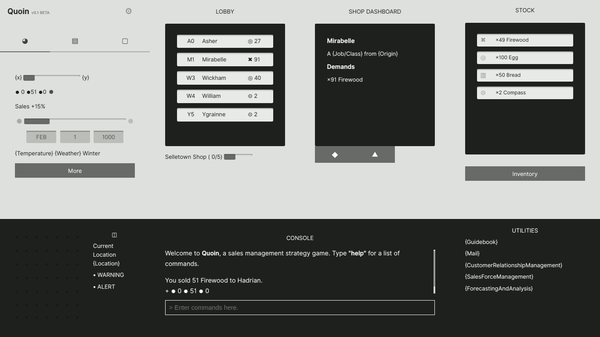

Quoin was an unfinished game where you played as an aspiring shopkeeper in the town of Selletown.
I was taking a boring sales management course and so, to motivate myself to study, I turned it into a game by implementing concepts being taught in class. The project was eventually abandoned once coursework started piling up.
3Q2 3Q2 0.8D